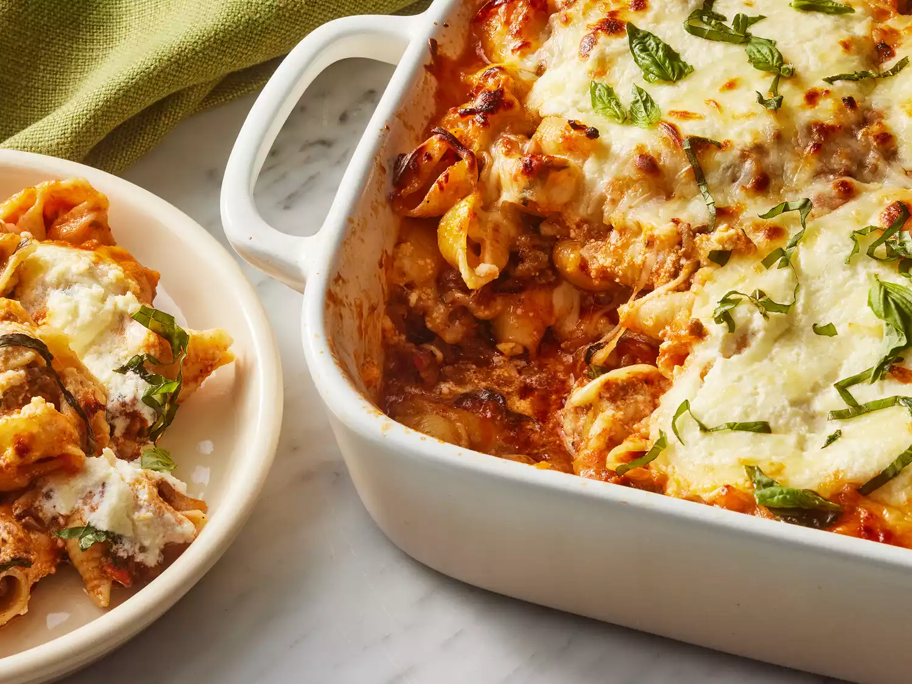

Lasagna Casserole
This casserole is the perfect winter dinner! It's gone in seconds in my house. Make sure to use whole-milk ricotta and use more red pepper if you like it hotter.

Ingredients:
- 1 (12 ounce) box jumbo pasta shells
- 1⁄4 cup extra-virgin olive oil, divided
- 1 pound ground sirloin
- 1 pound Italian sausage, hot or sweet
- 1 small yellow onion, finely chopped
- 6 cloves garlic, thinly sliced
- 1 (26 ounce) jar prepared marinara sauce
- 1 cup loosely packed fresh basil leaves
- 1⁄2 teaspoon crushed red pepper flakes
- 1 (15 ounce) container whole milk ricotta cheese
- 1⁄4 cup finely grated Parmigiano-Reggiano plus additional for serving
- 1⁄4 cup heavy whipping cream
- 1 teaspoon kosher salt
- 1 1⁄2 cups shredded part-skim mozzarella cheese
- cooking spray
Steps:
- Preheat the oven to 375 degrees F (190 degrees C). Set a rack in the center of the oven, about 10 inches from the heat source.
- Bring a large pot of salted water to a boil. Add shells and cook, stirring occasionally, until almost tender, about 7 minutes. Scoop out 1⁄2 cup cooking water; set aside. Drain pasta in a colander. Return to pot and toss with 1 tablespoon oil.
- Meanwhile, heat remaining 3 tablespoons oil in a large Dutch oven over medium-high heat. Add sirloin and sausage and cook, undisturbed, until bottom side is lightly browned, about 6 minutes. Stir, and continue to cook, stirring and breaking up meat into smaller pieces with a wooden spoon, until cooked through, about 4 minutes.
- Reduce heat to medium. Add onion and garlic, and cook, stirring often, until softened, about 4 minutes. Stir in marinara sauce, basil, and crushed red pepper. Remove ragu from heat.
- Stir together ricotta, Parmigiano-Reggiano, cream, and salt in a bowl.
- To assemble, spread about 2 cups of the ragu in the bottom of a 13- x 9-inch baking dish. Spoon 1⁄2 of the pasta over sauce. Dollop half of the ricotta mixture over pasta, and sprinkle with 1 cup mozzarella cheese. Spoon remaining pasta over mozzarella cheese. Spread remaining ragu over pasta mixture, and dollop with remaining ricotta mixture. Top with remaining 1⁄2 cup mozzarella cheese. Cover lasagna with a large sheet of aluminum foil that's been lightly sprayed with cooking spray (to prevent the cheese from sticking to it).
- Bake in preheated oven for 30 minutes. Remove from oven and remove foil. Increase oven temperature to broil with rack about 10 inches from heat source; preheat 5 minutes. Return baking dish to oven. Broil until cheese is browned in spots, 5 to 8 minutes.
Home